4 – Feasibility of Learning
上节课，我们主要介绍了根据不同的设定，机器学习可以分为不同的类型。其中，监督式学习中的二元分类和回归分析是最常见的也是最重要的机器学习问题。本节课，我们将介绍机器学习的可行性，讨论问题是否可以使用机器学习来解决。
一、Learning is Impossible
首先，考虑这样一个例子，如下图所示，有3个label为-1的九宫格和3个label为+1的九宫格。根据这6个样本，提取相应label下的特征，预测右边九宫格是属于-1还是+1？结果是，如果依据对称性，我们会把它归为+1；如果依据九宫格左上角是否是黑色，我们会把它归为-1。除此之外，还有根据其它不同特征进行分类，得到不同结果的情况。而且，这些分类结果貌似都是正确合理的，因为对于6个训练样本来说，我们选择的模型都有很好的分类效果。
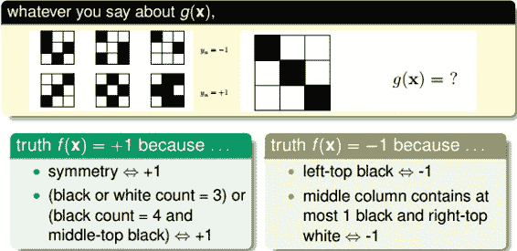
再来看一个比较数学化的二分类例子，输入特征x是二进制的、三维的，对应有8种输入，其中训练样本D有5个。那么，根据训练样本对应的输出y，假设有8个hypothesis，这8个hypothesis在D上，对5个训练样本的分类效果效果都完全正确。但是在另外3个测试数据上，不同的hypothesis表现有好有坏。在已知数据D上， ；但是在D以外的未知数据上，不一定成立。而机器学习目的，恰恰是希望我们选择的模型能在未知数据上的预测与真实结果是一致的，而不是在已知的数据集D上寻求最佳效果。
；但是在D以外的未知数据上，不一定成立。而机器学习目的，恰恰是希望我们选择的模型能在未知数据上的预测与真实结果是一致的，而不是在已知的数据集D上寻求最佳效果。
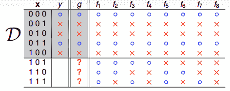
这个例子告诉我们，我们想要在D以外的数据中更接近目标函数似乎是做不到的，只能保证对D有很好的分类结果。机器学习的这种特性被称为没有免费午餐（No Free Lunch）定理。NFL定理表明没有一个学习算法可以在任何领域总是产生最准确的学习器。不管采用何种学习算法，至少存在一个目标函数，能够使得随机猜测算法是更好的算法。平常所说的一个学习算法比另一个算法更“优越”，效果更好，只是针对特定的问题，特定的先验信息，数据的分布，训练样本的数目，代价或奖励函数等。从这个例子来看，NFL说明了无法保证一个机器学习算法在D以外的数据集上一定能分类或预测正确，除非加上一些假设条件，我们以后会介绍。
二、Probability to the Rescue
从上一节得出的结论是：在训练集D以外的样本上，机器学习的模型是很难，似乎做不到正确预测或分类的。那是否有一些工具或者方法能够对未知的目标函数f做一些推论，让我们的机器学习模型能够变得有用呢？
如果有一个装有很多（数量很大数不过来）橙色球和绿色球的罐子，我们能不能推断橙色球的比例u？统计学上的做法是，从罐子中随机取出N个球，作为样本，计算这N个球中橙色球的比例v，那么就估计出罐子中橙色球的比例约为v。
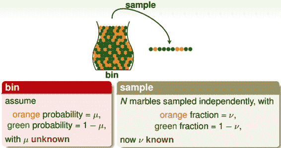
这种随机抽取的做法能否说明罐子里橙色球的比例一定是v呢？答案是否定的。但是从概率的角度来说，样本中的v很有可能接近我们未知的u。下面从数学推导的角度来看v与u是否相近。
已知u是罐子里橙色球的比例，v是N个抽取的样本中橙色球的比例。当N足够大的时候，v接近于u。这就是Hoeffding’s inequality：
Hoeffding不等式说明当N很大的时候，v与u相差不会很大，它们之间的差值被限定在之内。我们把结论v=u称为probably approximately correct(PAC)。
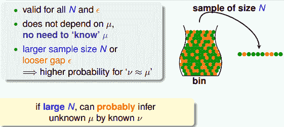
三、Connection to Learning
下面，我们将罐子的内容对应到机器学习的概念上来。机器学习中hypothesis与目标函数相等的可能性，类比于罐子中橙色球的概率问题；罐子里的一颗颗弹珠类比于机器学习样本空间的x；橙色的弹珠类比于h(x)与f不相等；绿色的弹珠类比于h(x)与f相等；从罐子中抽取的N个球类比于机器学习的训练样本D，且这两种抽样的样本与总体样本之间都是独立同分布的。所以呢，如果样本N够大，且是独立同分布的，那么，从样本中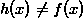的概率就能推导在抽样样本外的所有样本中的概率是多少。
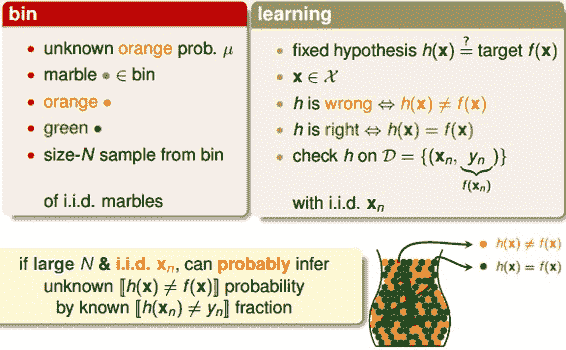
映射中最关键的点是讲抽样中橙球的概率理解为样本数据集D上h(x)错误的概率，以此推算出在所有数据上h(x)错误的概率，这也是机器学习能够工作的本质，即我们为啥在采样数据上得到了一个假设，就可以推到全局呢？因为两者的错误率是PAC的，只要我们保证前者小，后者也就小了。
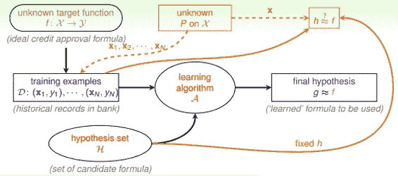
这里我们引入两个值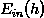和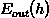。表示在抽样样本中，h(x)与不相等的概率；表示实际所有样本中，h(x)与f(x)不相等的概率是多少。
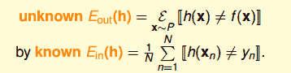
同样，它的Hoeffding’s inequality可以表示为：
该不等式表明，也是PAC的。如果，很小，那么就能推断出很小，也就是说在该数据分布P下，h与f非常接近，机器学习的模型比较准确。
一般地，h如果是固定的，N很大的时候，，但是并不意味着。因为h是固定的，不能保证足够小，即使，也可能使偏大。所以，一般会通过演算法A，选择最好的h，使足够小，从而保证很小。固定的h，使用新数据进行测试，验证其错误率是多少。
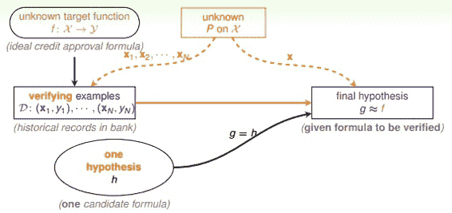
四、Connection to Real Learning
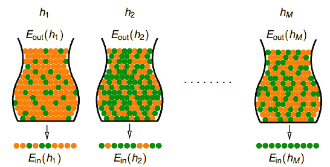
假设现在有很多罐子M个（即有M个hypothesis），如果其中某个罐子抽样的球全是绿色，那是不是应该选择这个罐子呢？我们先来看这样一个例子：150个人抛硬币，那么其中至少有一个人连续5次硬币都是正面朝上的概率是
可见这个概率是很大的，但是能否说明5次正面朝上的这个硬币具有代表性呢？答案是否定的！并不能说明该硬币单次正面朝上的概率很大，其实都是0.5。一样的道理，抽到全是绿色求的时候也不能一定说明那个罐子就全是绿色球。当罐子数目很多或者抛硬币的人数很多的时候，可能引发Bad Sample，Bad Sample就是和差别很大，即选择过多带来的负面影响，选择过多会恶化不好的情形。
根据许多次抽样的到的不同的数据集D，Hoeffding’s inequality保证了大多数的D都是比较好的情形（即对于某个h，保证），但是也有可能出现Bad Data，即和差别很大的数据集D，这是小概率事件。
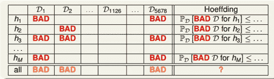
也就是说，不同的数据集，对于不同的hypothesis，有可能成为Bad Data。只要在某个hypothesis上是Bad Data，那么就是Bad Data。只有当在所有的hypothesis上都是好的数据，才说明不是Bad Data，可以自由选择演算法A进行建模。那么，根据Hoeffding’s inequality，Bad Data的上界可以表示为连级（union bound）的形式：
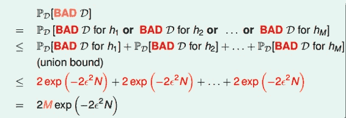
其中，M是hypothesis的个数，N是样本D的数量，是参数。该union bound表明，当M有限，且N足够大的时候，Bad Data出现的概率就更低了，即能保证D对于所有的h都有，满足PAC，演算法A的选择不受限制。那么满足这种union bound的情况，我们就可以和之前一样，选取一个合理的演算法（PLA/pocket），选择使最小的作为矩g，一般能够保证，即有不错的泛化能力。
所以，如果hypothesis的个数M是有限的，N足够大，那么通过演算法A任意选择一个矩g，都有成立；同时，如果找到一个矩g，使，PAC就能保证。至此，就证明了机器学习是可行的。
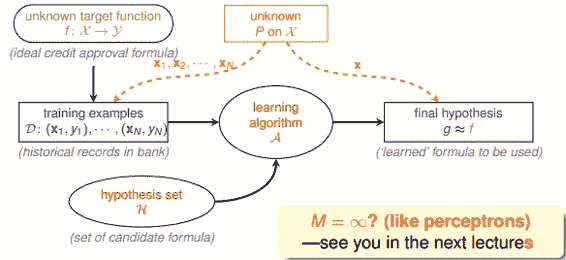
但是，如上面的学习流程图右下角所示，如果M是无数个，例如之前介绍的PLA直线有无数条，是否这些推论就不成立了呢？是否机器就不能进行学习呢？这些内容和问题，我们下节课再介绍。
五、总结
本节课主要介绍了机器学习的可行性。首先引入NFL定理，说明机器学习无法找到一个矩g能够完全和目标函数f一样。接着介绍了可以采用一些统计上的假设，例如Hoeffding不等式，建立和的联系，证明对于某个h，当N足够大的时候，和是PAC的。最后，对于h个数很多的情况，只要有h个数M是有限的，且N足够大，就能保证，证明机器学习是可行的。
注明：
文章中所有的图片均来自台湾大学林轩田《机器学习基石》课程。